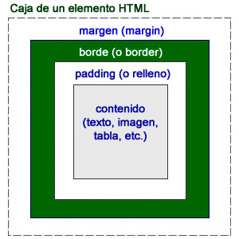

La figura muestra esas propiedades.

Además del contenido, cada elemento puede tener o no un borde y, además, podemos modificar la distancia entre el borde y el límite de la caja (margin) y la distancia entre ese borde y el comienzo del contenido (padding).
Estas opciones nos proporcionan un gran control sobre cómo debe situarse cada elemento.
Observemos el ejemplo de la figura:
Se trata de una tabla, con un título y una imagen. Cada elemento HTML tiene ya su propio estilo aplicado, todos conocidos. Éstos son los principales que, como se puede observar, hemos aplicado a los elementos genéricos directamente:
body {
text-align: left;h1 {
background-color: rgb(200, 214, 185);
}
font-family: Arial, Helvetica, sans-serif;caption {
color: rgb(102, 0, 204);
vertical-align: top;
}
font-style: italic;img {
color: rgb(153, 153, 153);
}
text-align: left;tbody {
vertical-align: top;
}
text-align: center;
background-color: rgb(204, 204, 255);
}
En la imagen se aprecia que algunos elementos están situados muy pegados entre sí. Se aprecian poco esos espacios de los que estamos hablando. Probemos a modificar alguno de sus valores.
Margen
Comenzaremos con la imagen. Con tan sólo modificar su margen, observaremos cómo se distancia del resto de los elementos. Usaremos la propiedad margin seguida de un valor numérico o de un porcentaje:
img { margin: 20px; }
En la figura se puede apreciar el desplazamiento de la imagen 20 píxeles por cada lado.
Si usamos porcentajes en lugar de una medida exacta, obtendremos un resultado relativo al tamaño de la ventana del navegador. Según la ocasión, nos convendrá emplear un tipo u otro.
Relleno
Probaremos ahora a modificar su relleno, es decir, la distancia imaginaria entre un hipotético borde y la imagen propiamente dicha. Para ello emplearemos la propiedad padding, exactamente igual que hicimos con la anterior. Probemos con un valor menos exagerado:
img { padding: 5px; }
Actividad 1
Tomando una página de ejemplo, modificaremos los valores de márgenes y de rellenos de diferentes elementos. Pensando en las etiquetas que tenemos en la página, intentaremos cambiar aquellas que pueda parecer que no tienen esta cualidad.
Borde
Si recargamos la página con esta incorporación, observaremos que, en efecto, la imagen se separa un poco más, esos 5 píxeles por cada lado, pero no es posible distinguir dónde acaba el efecto del margen y comienza el del relleno. Para poder diferenciar los valores, deberíamos tener un borde en la imagen.
img {
border-width: 2px;
border-style: solid;
border-color: #007000;
}
Con los conocimientos que tenemos ya de CSS podemos intuir con facilidad qué es lo que hace cada una de esas tres propiedades: en una definimos el grosor del borde, en otra el tipo de línea y en la última su color. El resultado se muestra en la figura:
Ahora sí que se aprecia la distancia entre el borde y el contenido, qué es de 5 píxeles, y entre el borde y el título, por ejemplo, que es de 20 píxeles, más lo que esté configurado de forma predeterminada.
Podemos probar a aplicar esas propiedades a cualquiera de las etiquetas de nuestra página web. Todas ellas se verán afectadas, ya que todas tienen esas propiedades asociadas. En la figura hemos incrementado el relleno de cada celda (la etiqueta <td>):
td {padding: 5px;}
Así conseguimos que la tabla tenga volumen y que el texto no se acerque demasiado a los bordes.
Laterales
Tanto margin, como padding y border se pueden emplear para modificar laterales de una caja, con independencia de los demás. Añadiendo a cada uno de ellos la variación -left (izquierda), -right (derecha), -top (arriba) o -bottom (abajo) conseguimos que sólo afecte al valor o valores indicados.
En la figura hemos aplicado estas propiedades para el título de la página:
h1 {
margin-top:40px;
padding-left: 5px;
padding-right:5px;
border-top-width: 2px;
border-top-style: dotted;
border-top-color: #007000;
border-bottom-width: 2px;
border-bottom-style: double;
border-bottom-color: #007000;
}
Todo el contenido de la etiqueta <h1> (la imagen es parte del encabezado) ha tomado los valores indicados.
Actividad 2
Continuando con el ejemplo anterior, iremos modificando valores parciales, retirando la propiedad general para reemplazarla por otras dos o tres que modifiquen sólo algunos laterales.
Más opciones para los bordes
Para los bordes podemos definir tres propiedades: su anchura, su estilo y su color. La anchura y el color se definen con las medidas habituales y los sistemas que ya hemos analizado. El estilo, por su parte, se basa en una serie de valores concretos:
- dotted: punteado.
- dashed: línea discontinua.
- solid: línea continua.
- double: línea doble.
- groove: tipo de relieve.
- ridge: tipo de relieve.
- inset: tipo de relieve.
- outset: tipo de relieve.
- none: empleado para indicar que no habrá borde
Es cuestión de probar algunos modelos. El valor solid es la línea sencilla, la más empleada.
Como ya sucedía con otras propiedades, podemos reagrupar los valores referidos a los bordes en una sola propiedad genérica denominada border. Para ello estableceremos los valores separados por espacios y en el orden de tamaño, estilo y color, como en este ejemplo que haría la misma función que el recuadro anterior:
img { border: 2px solid #007000;}
Actividad 3
Esquinas redondeadas
Con los estilos actuales podemos trazar un borde alrededor de una figura y que tenga sus esquinas redondeadas.
La propiedad que lo permite es border-radius, acompañada de un valor numérico. El ejemplo anterior, con la incorporación de esta propiedad, daría como resultado el rectángulo de la figura:
img {
border: 2px solid #007000;
border-radius:25px;
}
Para obtener un efecto apropiado y que el borde no chocase con el contenido, hemos incrementado un poco el relleno. Esta es la regla completa para la imagen:
img {
text-align: left;
vertical-align: top;
margin: 20px;
padding: 20px;
border: 2px solid #007000;
border-radius:25px;
}
Pregunta Verdadero-Falso
Verdadero Falso
Verdadero Falso